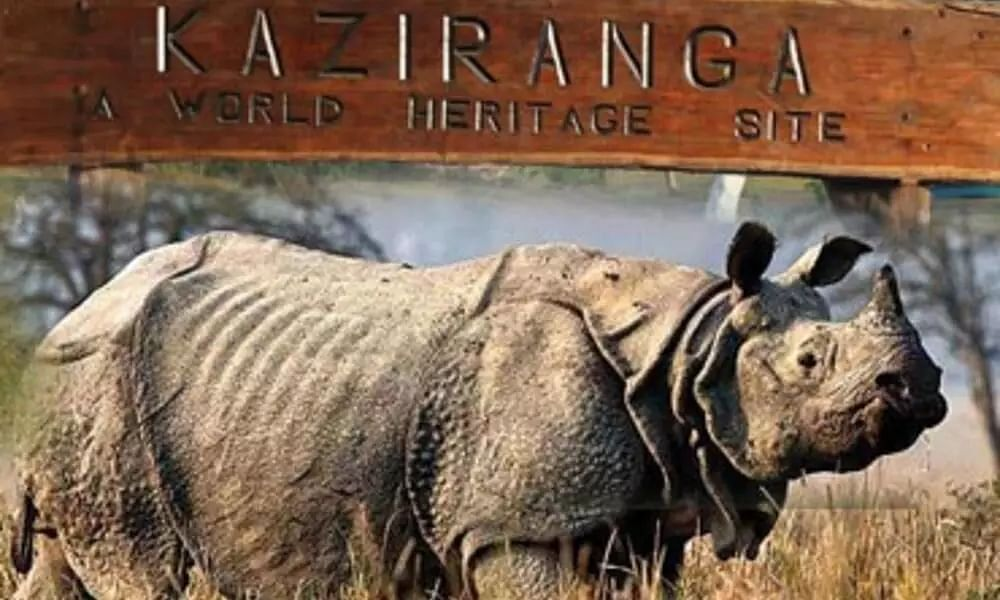

Heritage Sites
The United Nations Educational, Scientific and Cultural Organization (UNESCO) World Heritage Sites are the important places of cultural or natural heritage as described in the UNESCO World Heritage Convention, established in 1945.
The first sites to be inscripted were Ajanta Caves, Ellora Caves, Agra Fort, and Taj Mahal, of which all were inscribed in the 1983 session of the World Heritage Committee. The latest site to be inscribed is Dholavira, Gujarat in 2021. As of July 2021, 19 of the 36 States and union territories of India are home to the World Heritage Sites, with Maharashtra having highest number of sites.
At present, there are 40 World Heritage Sites located in India. Out of these, 32 are cultural, 7 are natural, and 1 is mixed (meeting both cultural and natural criteria), as determined by the organization's selection criteria. India has the sixth largest number of sites in the world.
| Name | Image | Description |
|---|
| Ajanta Caves |  | The Ajanta Caves are approximately 30 rock-cut Buddhist cave monuments dating from the 2nd century BCE to about 480 CE in the Aurangabad district of Maharashtra state in India. The caves include paintings and rock-cut sculptures described as among the finest surviving examples of ancient Indian art, particularly expressive paintings that present emotions through gesture, pose and form.The Ajanta Caves are mentioned in the memoirs of several medieval-era Chinese Buddhist travellers to India and by a Mughal-era official of Akbar era in the early 17th century.They were covered by jungle until accidentally "discovered" and brought to Western attention in 1819 by a colonial British officer Captain John Smith on a tiger-hunting party.The caves are in the rocky northern wall of the U-shaped gorge of the river Waghur,in the Deccan plateau. Within the gorge are a number of waterfalls, audible from outside the caves when the river is high. |
| Ellora Caves |  | Ellora Caves is a UNESCO World Heritage Site located in the Aurangabad district of Maharashtra, India. It is one of the largest rock-cut Hindu temple cave complexes in the world, featuring Buddhist and Jain monuments with artwork dating from the period 600–1000 CE. Cave 16 features the largest single monolithic rock excavation in the world, the Kailash temple, a chariot-shaped monument dedicated to Lord Shiva. The Kailash temple excavation also features sculptures depicting the gods, goddesses found in Hinduism as well as relief panels summarizing the two major Hindu Epics.Although the caves served as temples and a rest stop for pilgrims,the site's location on an ancient South Asian trade route also made it an important commercial centre in the Deccan region.It is 29 kilometres (18 miles) north-west of Aurangabad, and about 300 kilometres (190 miles) east-northeast of Mumbai. Today, the Ellora Caves, along with the nearby Ajanta Caves, are a major tourist attraction in the Marathwada region of Maharashtra and a protected monument under the Archaeological Survey of India (ASI). |
| Agra Fort |  | Agra Fort is a historical fort in the city of Agra in India. It was the main residence of the emperors of the Mughal Dynasty until 1638, when the capital was shifted from Agra to Delhi. Before capture by the British, the last Indian rulers to have occupied it were the Marathas. In 1983, the Agra fort was life inscribed as a UNESCO World Heritage Site. It is about 2.5 km northwest of its more famous sister monument, the Taj Mahal. The fort can be more accurately described as the walled city. Agra assumed the status of capital when Sikandar Lodi (A.D. 1487–1517) shifted his capital from Delhi and constructed a few buildings in the pre-existing Fort at Agra. After the first battle of Panipat (A.D. 1526) Mughals captured the fort and ruled from it. In A.D. 1530, Humayun was crowned in it. The Fort got its present appearance during the reign of Akbar (A.D. 1556–1605) |
| Taj Mahal |  | The Taj Mahal 'Crown of the Palace',is an ivory-white marble mausoleum on the right bank of the river Yamuna in the Indian city of Agra. It was commissioned in 1632 by the Mughal emperor Shah Jahan to house the tomb of his favourite wife, Mumtaz Mahal; it also houses the tomb of Shah Jahan himself. The tomb is the centrepiece of a 17-hectare (42-acre) complex, which includes a mosque and a guest house, and is set in formal gardens bounded on three sides by a crenellated wall.The Taj Mahal was designated as a UNESCO World Heritage Site in 1983 for being "the jewel of Muslim art in India and one of the universally admired masterpieces of the world's heritage". It is regarded by many as the best example of Mughal architecture and a symbol of India's rich history. The Taj Mahal attracts more than 6 million visitors a year and in 2007, it was declared a winner of the New 7 Wonders of the World (2000–2007) initiative. |
| Konark Sun Temple |  | Konark Sun Temple is a 13th-century CE (year 1250) Sun temple at Konark about 35 kilometres (22 mi) northeast from Puri on the coastline of Odisha, India.The temple is attributed to king Narasimhadeva I of the Eastern Ganga dynasty about 1250 CE.Dedicated to the Hindu Sun God Surya, what remains of the temple complex has the appearance of a 100-foot (30 m) high chariot with immense wheels and horses, all carved from stone.
Once over 200 feet (61 m) high,much of the temple is now in ruins, in particular the large shikara tower over the sanctuary; at one time this rose much higher than the mandapa that remains.The cause of the destruction of the Konark temple is unclear and still remains a source of controversy.Konark Sun Temple is depicted on the reverse side of the Indian currency note of 10 rupees to signify its importance to Indian cultural heritage. |
| Group of Monuments at Mahabalipuram |  | The Group of Monuments at Mahabalipuram is a collection of 7th- and 8th-century CE religious monuments in the coastal resort town of Mahabalipuram, Tamil Nadu, India and a UNESCO World Heritage Site.It is on the Coromandel Coast of the Bay of Bengal, about 60 kilometres (37 mi) south of Chennai.
The site has 40 ancient monuments and Hindu temples, including one of the largest open-air rock reliefs in the world: the Descent of the Ganges or Arjuna's Penance.The group contains several categories of monuments: ratha temples with monolithic processional chariots, built between 630 and 668; mandapa viharas (cave temples) with narratives from the Mahabharata and Shaivic, Shakti and Vaishna inscriptions in a number of Indian languages and scripts. |
| Kaziranga National Park |  | Kaziranga National Park is a national park in the Golaghat, Karbi Anglong and Nagaon districts of the state of Assam, India. The sanctuary, which hosts two-thirds of the world's great one-horned rhinoceroses, is a World Heritage Site.It comprises 1,641 adult rhinos (642 males, 793 females, 206 unsexed); 387 sub-adults (116 males, 149 females, 122 unsexed); and 385 calves.In 2015, the rhino population stood at 2401. Kaziranga is home to the highest density of tigers among protected areas in the world, and was declared a Tiger Reserve in 2006 (now the highest tiger density is in Orang National Park, Assam). The park is home to large breeding populations of elephants, wild water buffalo, and swamp deer.Kaziranga is a vast expanse of tall elephant grass, marshland, and dense tropical moist broadleaf forests, criss-crossed by four major rivers, including the Brahmaputra, and the park includes numerous small bodies of water. Kaziranga has been the theme of several books, songs, and documentaries. |
| Manas National Park |  | Manas National Park is a national park, UNESCO Natural World Heritage Site, a Project Tiger reserve, an elephant reserve and a biosphere reserve in Assam, India. Located in the Himalayan foothills, it is contiguous with the Royal Manas National Park in Bhutan. The park is known for its rare and endangered endemic wildlife such as the Assam roofed turtle, hispid hare, golden langur and pygmy hog. Manas is famous for its population of the wild water buffalo.The Manas National Park was declared a sanctuary on 1 October 1928 with an area of 360 km2. Manas bio reserve was created in 1973.There is only one forest village, Pagrang, in the core of the national park. Apart from this village 56 more villages surround the park.Many more fringe villages are directly or indirectly dependent on the park. |
| Churches and convents of Goa |  | Churches and Convents of Goa is the name given by UNESCO to a set of religious monuments located in Goa Velha (or Old Goa), in the state of Goa, India, which were declared a World Heritage Site in 1986.
Goa was the capital of Portuguese India and Asia and an evangelization center from the sixteenth century. The justifications for the inclusion of religious monuments in Goa in the World Heritage List are: 1) the influence of the monuments in the dissemination of Western art forms – the Manueline styles, Mannerist and Baroque – throughout Asia where Catholic missions were established; 2) the value of the set of monuments of Goa as an exceptional example that illustrates the work of evangelization and 3) the specific value of presence in the Basilica of Bom Jesus of the tomb of Francisco Xavier, which illustrates a major world event: the influence of the Catholic religion in Asia in the modern era |
| Hampi |  | Hampi or Hampe, also referred to as the Group of Monuments at Hampi, is a UNESCO World Heritage Site located in east-central Karnataka, India.
Hampi was the capital of the Vijayanagara Empire in the 14th century. Chronicles left by Persian and European travellers, particularly the Portuguese, say that Hampi was a prosperous, wealthy and grand city near the Tungabhadra River, with numerous temples, farms and trading markets. By 1500 CE, Hampi-Vijayanagara was the world's second-largest medieval-era city after Beijing, and probably India's richest at that time, attracting traders from Persia and Portugal. The Vijayanagara Empire was defeated by a coalition of Muslim sultanates; its capital was conquered, pillaged and destroyed by sultanate armies in 1565, after which Hampi remained in ruins. |